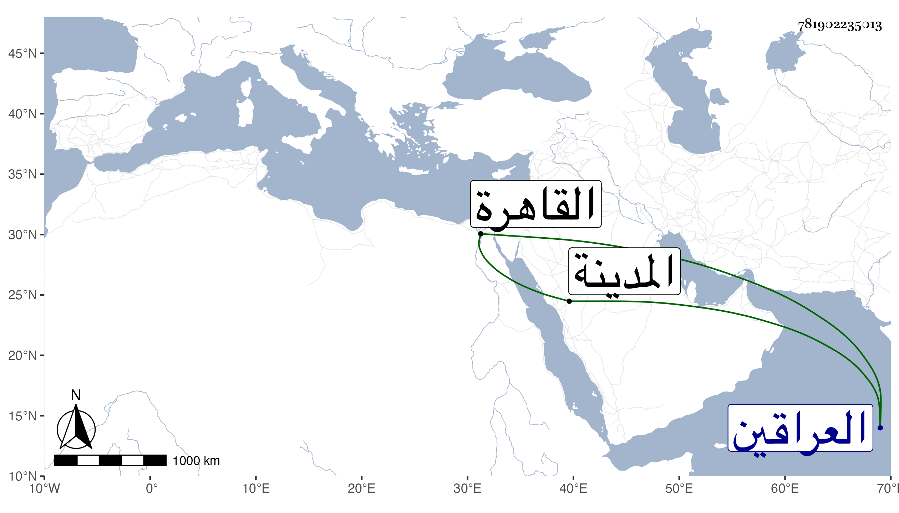

0902Sakhawi.DawLamic.ITO20230111-ara1.EIS1600.781902235013
Biography ID: 781902235013
1110
يعقوب بك بن حسن بك بن علي بك بن قريلوك عثمان أبو المظفر صاحب الشرق وسلطان العراقين وعم حسين مرزا بن محمد أغرلو المقيم بالقاهرة قتل أخاه أبا الفتح خليلا المستقر في السلطنة بعد أبيهما حسن بك واستقر وقدمت ابنته مع أمها في ربيع الأول سنة ست وتسعين لتزوج لابن أخيه المشار إليه . ومات المترجم عن قرب ولم تلبث هي بعد زواجه لها إلا قليلا وماتت في طاعون التي تليها ثم مات الزوج عند دخوله المدينة من آخرها عفا الله عنهم .
